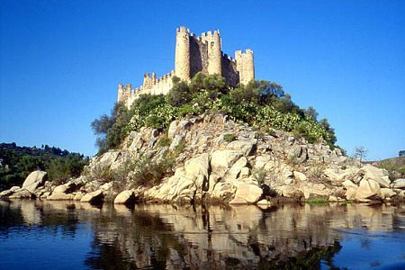

Almourol
Der Ursprung des Namens Almourol ist nicht genau bekannt, weshalb seine Bedeutung nur schwer zu ergründen ist. Selbst die Schreibweise des Namens hat im Laufe der Zeit verschiedene Varianten hervorgebracht: Almoriol, Almorol, Almourel, Almuriel.
Die Theorie, die sich der größten Beliebtheit erfreut, sieht das arabische Wort almoran, d. h. "Hoher Felsen", als Ursprung an, was der Lage der Burg von Almourol durchaus entspricht. Diese ragt in 18 m Höhe auf einem beeindruckenden Granitfelsen in die Höhe.
Die Wasserburg von Almourol wurde zwischen Vila Nova da Barquinha und Praia do Ribatejo auf einer richtigen kleinen Insel im Tejo erbaut und gilt heute als eine der schönsten und außergewöhnlichsten Festungen, die Portugal vorzuweisen hat. Sie ist 310 Meter lang, 75 Meter breit und an ihrem höchsten Punkt 18 Meter hoch.
Die im Innern der Festungsmauern durchgeführten archäologischen Ausgrabungen haben mehrere Gegenstände aus römischer Zeit (Münzen) sowie aus dem Mittelalter (Medaillen) zu Tage gebracht. Es scheint, dass noch vor der römischen Invasion die Lusitanier auf dieser Insel eine kleine Burg errichtet hatten. Diese wurde von den Römern und später von anderen Volksstämmen eingenommen, insbesondere den Alanen, den Westgoten und den Mauren.
 |
 |
Die Wasserburg von Almourol wurde den Mauren im Zuge der portugiesischen Reconquista unter der Herrschaft Alfons I. wieder entrissen. Sie liegt an einem Punkt des Tejo, der natürlich zur Zeit der Reconquista, aber auch später, für die Kontrolle des Handels mit Öl, Weizen, Schweinefleisch, Früchten und Holz zwischen den verschiedenen Gegenden des Landes und Lissabon von kritischer Bedeutung war.
Diese strategische Position war sicher einer der Gründe dafür, dass der Monarch die Burg dem Templerorden übertrug. So hatte der König nach der siegreichen Schlacht von Santarem Gualdim Pais mit dem Ausbau eines Schutzrings um die dem Heiligen Bernhard von Clairvaux vermachten Abtei von Alcobaça beauftragt. Durch seine Lage konnte sich die Burg von Almourol als wesentlicher Bestandteil dieser Schutzvorrichtung erweisen.
 |
 |
Zwischen 1160 und 1171, kurz nach dem Bau der Kreuzritterburg von Tomar, nahm Gualdim Pais den Bau der Burg von Almourol in Angriff. Dabei hielt er sich auch hier an die für den Templerorden typische Architektur, die man in den zur selben Zeit entstandenen Burgen von Idanha, Monsanto, Pombal und Tomar wiederfindet.
Mit dem Fortschreiten der Rückeroberung in den Süden des Landes und im Anschluss an die Auflösung des Templerordens verlor der Bau unter der Herrschaft von Dionysius I. nach und nach an Bedeutung.
Durch ein Dekret vom 16. Juni 1910 wurde die Burg zum Nationaldenkmal Portugals erklärt, zwischen 1940 und 1950 wurden mehrere Restaurationsarbeiten durchgeführt. Heute befindet sich die Burg im Besitz des Verteidigungsministeriums und wird von der Ingenieurschule in Tancos in Stand gehalten.

Legende
Ein arabischer Fürst, Besitzer der Burg von Almourol, wurde von einem christlichen Ritter hintergangen, in den sich seine Tochter verliebt und dem sie den geheimen Zugang zur Burg durch einen Tunnel unter dem Tejo verraten hatte.
Der Ritter verwendete diese Informationen, um den Araber in einen Hinterhalt zu locken und die Burg einzunehmen. Der Emir und seine Tochter zogen jedoch den Tod der Gefangenschaft vor und stürzten sich von den Türmen der Burg in die Tiefe ...